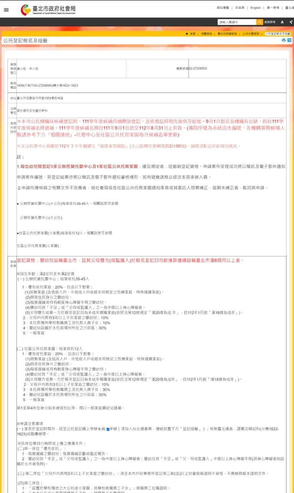

Current State Analysis
Stakeholder Map
Focus on the issues parents face during the stages of selecting
childcare institutions, applying, and retrieving information.
Usability evaluation and cognitive walkthrough
The main issues are cluttered information and difficulty
understanding lottery regulations.


Insufficient Error Prevention, Lack of Consistency, and Missing
Assistance
We rated issues on a scale of 1 to 4 based on their severity.
Among the 64 usability problems identified, the most critical
were insufficient error prevention, lack of consistency, and the
absence of help or guidance.
Scattered Documents and Poorly Organized Forms
Through the team's cognitive walkthrough of three main
tasks—understanding rules, finding childcare institution
information, and registration—it was observed that although the
process is simple and linear, disorganized documents,
inconsistent text and color usage, and cluttered form layouts
significantly reduce users' efficiency in reading and locating
information.
We interviewed six parents and summarized the results into ==three
personas==